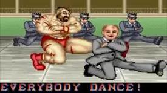

< < < Back
How To Do A Pistol Squat – Return Of Kings
Training the leg muscles is a necessity for anybody who wants to do any sort of physical endeavor. Simply put, you’re going to be standing on your legs throughout whatever sport it is you’re playing, and stronger legs means you’re going to run faster and jump higher.
Beyond actually training the skills needed in your sport—ie: pivots, jumping, running, etc., the best way to increase the performance of your legs is progressive resistance training. This will increase your muscular power, which will aid any rapid, explosive movement you’re performing: such as sprinting, vertical leaps, and kicking.
The most obvious resistance training is that of the barbell squat and its numerous variations. Beyond the basic back squat, there’s the front squat, the overhead squat, high and low bar squats, and a julienne more. Those will be discussed in another article, but today I will bring to you the second article in my series on progressive calisthenics: the squat progression, with the end goal being the mastery of the one legged “pistol” squat.
The reasons I advocate learning the pistol squat before doing barbell squats are the exact same reasons I gave for teaching you the one-armed pushups before I wrote any articles on weighted lifts. Namely, the pistol squats will provide a base of muscular strength and prepare the fitness novice for more demanding lifts in the future, they have almost no risk of injury, and they train the body to move unilaterally, an unusual movement that can only make you stronger when you lift actual weights.

Prepare Yourself For Your Trip to Russia
Any child who played through Street Fighter II saw Zangief and his merry KGB agents doing the Kazatsky in his ending and was inspired to run outside the arcade to try doing this, only to be completely incapable of bending his knee at that angle. At which point the child probably suffered some sort of injury.

Much like the one-armed pushup, mastery of the one-legged squat requires the central nervous system to be gradually trained to move in such a manner (for a more in-depth, biological explanation of why this phenomenon exists, please see that article. And just like the one-armed pushup, doing the two-armed variation won’t prepare you for the rigors of the unilateral version, but it is the required starting point of the progression.
Step By Step
The first step of the squat progression is the standard two-legged squat, or “deep knee bend,” an exercise that your elementary school gym teachers probably made you do before they rolled out the furniture dollies to waste your time for 45 minutes.

Yeah, I’m pulling out this picture again
To do the standard squat, place your feet shoulder width, and have the feet pointing straight ahead or slightly splayed out. You absolutely do not want your toes to be point inward, as this will cause your knees to knock inward, which can cause stress to your connective tissues. It is important to note that if your ankles or knees hurt when just standing in preparation for a squat, stop immediately and reposition your feet. As this is the same position that the barbell squat is done in, fixing form is imperative before weights are added.
From here, keep the back straight and bend down until your hamstrings touch your calves and you have gone “Ass to grass.” Keeping the head up and looking straight ahead helps me keep my torso fixed, as seen in the picture. Do ten of these.
#2. For obvious reasons I have censored my face
From here you progress to the heels together squat, sometimes called the diamond squat akin to the diamond pushup: put the heels together, keep the back straight, and bend ass to grass like the regular squat. This does not really require any more muscular exertion than the regular deep knee bend, but the close proximity of the feet will force you to be off balance, and your body will be forced to compensate. And of course a minor drawback is that doing this exercise will make you look like a pouting emo teenager, but that is a necessary sacrifice. Once again, do ten of these.

#1

#2
Similar to the one-armed pushup, the next step will also require a basketball or something of similar size. The one-and-a-half leg squat will prepare the body for unilateral movements. Kick one leg out in the air, as pictured

#1
Then bend the other leg until you are ass to grass and the leg is sticking out and straight, with the opposite hand resting on the object (ie: left foot works with the right hand, and vice versa). Positions vary here: Some advocate a flat foot and the leg held in the air as the proper position, while I personally say it’s okay to squat on the ball of the foot and have the extended leg touching the floor, as below:

If you choose to have the leg touching the floor, make sure that it is fully extended and only your heel touches the ground-otherwise that foot will assist the lift, and thus take pressure off the squatting leg. Do this for both legs.
Once you can do ten of those, do half pistols-squat down about halfway and then come up. When you can go down all the way (not necessarily coming up), with both legs, move on to the next step.

The assisted pistol squat is similar to the assisted one-armed pushup (also similarly, I don’t have a picture of it, as I don’t own a ball currently)-extend the leg out with the heel resting on a basketball, then squat, rolling the basketball up to your knee. When you can do this 10 times with both legs, you are ready for the final step.
The pistol squat is done with the same form as the half pistol. Squat down all the way with one leg extended fully. You will probably have to start out by resting your hand on the floor—as before, do opposite hands and feet. Gradually take your hands off the floor. Perhaps you can embrace your inner cossack and cross your arms over your chest? While I can do the pistol squat, I admit I do not have the balance to do the hopak.
#1

#2
However you choose to integrate this exercise into your workout, it is a lower body exercise all athletes should learn.
Read More: 6 Tips To Build More Muscle During Your Workouts